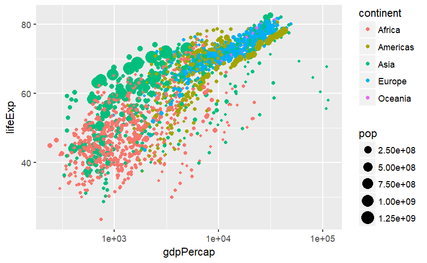

library(gginteractive)## Loading required package: ggplot2## Loading required package: htmltoolsp1 <- ggplot(mtcars, aes(x = wt, y = mpg)) + geom_point()A normal ggplot. Next we pipe to a “mesh” layer that allows the viewer to interact with the radio buttons.
p1 %>% mesh_alpha(geom = "point", variable = "cyl", on = radio)The ggplot object is converted to svg, and interactive elements created with some javascript that is created on the fly.
Just create a blank mesh, so that the plot is rendered as svg. In Rstudio this will appear in the viewer, rather than the plot window.
p1 %>% mesh_blank()The gapminder example:
library(gapminder)
p2 <- ggplot(gapminder, aes(x = gdpPercap, y = lifeExp, color = continent, size = pop)) +
geom_point() + scale_x_log10()
p2 <- p2 %>% mesh_alpha(geom = "point", variable = "year", on = radio)
p2Convert back to a regular ggplot object:
p2 %>% unmesh()
Another example:
(ggplot(gapminder, aes(x = gdpPercap, y = lifeExp, color = continent, size = pop)) +
geom_point() + scale_x_log10()) %>%
mesh_alpha(geom = "point", variable = "continent", on = radio)Kind of works for other geoms:
mtcars$cyl2 <- paste(mtcars$cyl)
(ggplot(mtcars, aes(x = wt, y = mpg, color = cyl2)) + geom_bar(stat = "identity")) %>%
mesh_alpha(geom = "bar", variable = "cyl2", on = radio)